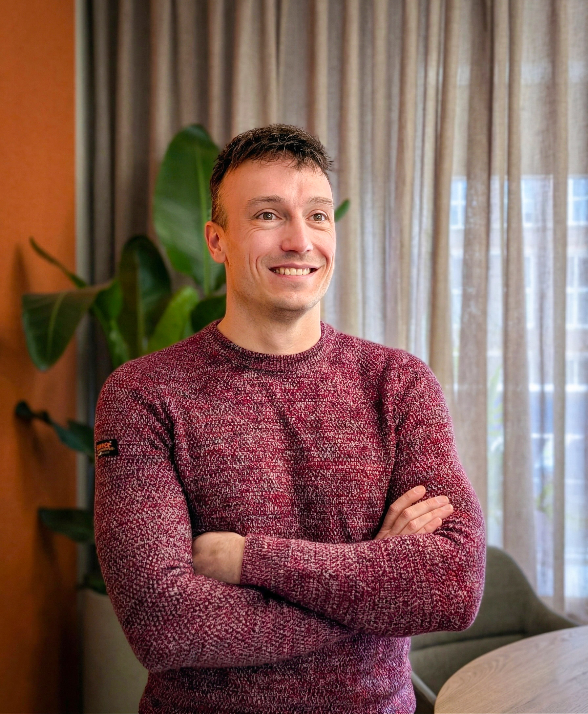

Copilot laten werken in het dagelijkse werk.
De nadruk ligt op toepassingen, werkafspraken, training en begeleiding. Niet op technologie als doel op zich.
Brandbook · versie 1.0
De visuele en verbale merkrichtlijnen van Supervised. Vastgelegd vanuit de actuele websitecode, templates, content en beeldassets op 14 juli 2026.
Supervised maakt Microsoft 365 Copilot begrijpelijk en bruikbaar voor het mkb. De identiteit combineert technische beheersing met persoonlijke begeleiding. Visueel betekent dat: een strikt systeem, veel rust, concrete hiërarchie en één energiek accent.
Copilot laten werken in het dagelijkse werk.
De nadruk ligt op toepassingen, werkafspraken, training en begeleiding. Niet op technologie als doel op zich.
Mkb in Oost-Nederland.
Directie, managers, interne kartrekkers en teams die willen starten of een vastgelopen proef willen hervatten.
Rustig. Persoonlijk. Concreet.
De site vermijdt visuele drukte en opgeblazen verkooptaal. Inhoud en structuur dragen het vertrouwen.
De primaire website-lock-up bestaat uit het ronde merkteken en de naam “Supervised”. Het merkteken is een gedetailleerde, symmetrische vorm binnen een cirkel. De vorm blijft altijd intact en wordt als éénkleurig vectorbeeld gebruikt.
Merkteken links, woordmerk rechts. Op de website is het teken 1.4rem, de naam 0.82rem, met 0.382rem tussenruimte. De naam staat in General Sans Regular, met 0.02em letterspatiëring.
Op een lichte ondergrond is het teken donkergroen. Op donkergroen is het licht ivoor. Het teken erft technisch currentColor, zodat het exact met de context meekleurt.
Digitale ondergrens: 18 px voor alleen het merkteken en 24 px in de header-lock-up. Voor drukwerk: minimaal 7 mm. Dit laatste is een afgeleide productierichtlijn en moet met een drukproef worden gecontroleerd.
Het systeem heeft twee volwaardige thema’s. Donker is de meest karakteristieke merkervaring. Licht gebruikt dezelfde hiërarchie met aangepaste transparanties en een donkerder oranje voor leesbare tekst.
--bg: #021602Primaire merkomgeving en browser theme-color.--bg: #FAFAF8Warm, nooit zuiver wit.--accent: #FF6205Focus, borders, selectie en interactieve nadruk.--accent-text: #C24A00Donkerder variant voor contrast op ivoor.rgba(255,98,5,.08)CTA- en citaatachtergrond.rgba(255,98,5,.06)Subtieler op de lichte ondergrond.oklch(.985 .005 145 / .1)Raster, scheidingen en borders.rgba(10,26,10,.08)Dezelfde rol in licht thema.General Sans Variable is het enige merklettertype. De familie loopt van gewicht 100 tot 900, maar de website gebruikt vooral 300, 400, 500 en 600. Het contrast ontstaat uit schaal, gewicht, hoofdletters en ruimte, niet uit een tweede lettertype.
20px · 1.618Desktop-root en bodyregelafstand.3.236rem · 300 · 1.05Gebalanceerde regels, geen negatieve tracking.2.618rem · 300 · 1.1Links in de editoriale tweekolom.1.236rem · 500 · 1.2H2 en kaarttitel.1rem · 400 · 1.618Lange tekst en toelichting..82rem · 400 · .02emNavigatie, knoppen en woordmerk..72rem · uppercase · .18emEyebrows, metadata en categorieën.1.618rem · 300 · .05emTabular figures, altijd twee cijfers.De schaal volgt expliciet de gulden snede φ = 1,618: 0.618 · 1 · 1.236 · 1.618 · 2.618 · 3.236 · 4.236 · 6.854 rem. Responsive root: 20 px boven 1200, 19 px tot 1200, 18 px tot 900, 17 px tot 640 en 16 px tot 480.
De website gebruikt een zeskoloms achtergrondraster met vijf verticale hairlines. Content staat meestal in een 50/50 editoriale verdeling: titel links, inhoud rechts. Op kleine schermen wordt het achtergrondraster vier kolommen en valt de content terug naar één kolom.
Verticale lijnen op 16,67%, 33,33%, 50%, 66,67% en 83,33%. De lijnen vervagen van volledig zichtbaar rond de bovenzijde naar transparant onderaan.
Verticale lijnen op 25%, 50% en 75%.
clamp(1.236rem, 3vw, 2.618rem)
De token --gutter stuurt header, content, footer en rasteruitlijning.
clamp(2rem, 4vw, 5rem)
Voor hero en page-grid. De afstand ademt mee met het scherm.
2.618rem
Ruimte rond hairlines in kaarten, FAQ en genummerde content.
De vormtaal is terughoudend. Borders zijn één pixel, grote vlakken blijven vlak en afgeronde vormen zijn gereserveerd voor actie, beeld en functionele controls. Nummering maakt volgorde en scanbaarheid zichtbaar.
Halve dag op locatie en een concreet plan van aanpak.
Oefenen op echte taken in jullie Microsoft-omgeving.
Altijd 1 px en altijd via --rule. Gebruikt voor raster, header, footer, kaartgroepen, panels en contentsecties.
1rem voor citaat en mobiele foto. 2.618rem voor het desktopportret. 999px uitsluitend voor CTA, themeswitch en kleine controls.
Lopende links krijgen een geanimeerde underline. Navigatie en componentlinks gebruiken kleur of border als feedback en hebben geen underline.
Transparant oranje vlak, 1 px oranje border, lichte tekst. Primaire CTA heeft gewicht 500 en eindigt waar passend met een pijl naar rechts.
Geen zwevende dozen. Een card is een genummerde rij met hairline, twee kolommen en veel verticale ruimte.
2 px solid #FF6205, 3 px offset en een radius van 2 px. Nooit verwijderen zonder gelijkwaardig alternatief.
Het heroportret van Jeroen Gijselaar is het primaire merkbeeld. Het voegt een menselijk gezicht toe aan een technisch onderwerp. De foto staat klein en bewust los in de compositie, niet als beeldvullende campagnefoto.

Bronformaat: 1792 × 2174 px, staand. Website-output: WebP op 400 en 700 px breed, kwaliteit 78. Object-fit cover en focus op center 25%.
Desktop: maximaal 260 × 320 px, radius 2.618rem, 4 graden rotatie en een schaduw van 0 24 80 px op 55% zwart. Licht thema verlaagt de schaduw naar 18%.
Kies echte werksituaties, natuurlijk licht en rustige achtergronden. Laat documenten, overleg, Microsoft 365 en begeleiding herkenbaar zijn. Vermijd generieke AI-robots, neonnetwerken, stockhanddrukken en geforceerde poses.
Zes logo’s staan in één rij op desktop, drie tot 1200 px en twee op mobiel. Hoogte is 1.618rem desktop, 1.45rem compact en 1.1rem mobiel. Donker: luminosity blend en 55% opacity. Licht: invert en 30% opacity. Hover herstelt 100% opacity.


srcset, WebP voor content en verkleinde JPG voor social previews. Elk beeld krijgt expliciete width en height om layout shift te voorkomen.Beweging ondersteunt oriëntatie en hiërarchie. De primaire curve versnelt snel en landt rustig. De site gebruikt geen voortdurende decoratieve animatie.
180msHoverfeedback, panel-links en theme-controls.350msView transitions, onderstrepingen, overlays en menuverplaatsing.700msPortret: opacity, 16 px verticale verplaatsing, 4 px blur en vaste rotatie.cubic-bezier(.22,1,.36,1)Primaire ease-out voor bijna alle interacties.Hero-elementen komen in 600 ms van 12 px lager naar hun positie. Stagger: 0.10, 0.22, 0.34 en 0.46 seconde.
Dropdown beweegt 0.5rem omhoog naar positie. Achtergrond vervaagt en krijgt 7 px blur. Mobiel menu beweegt 0.618rem.
Lenis wordt alleen boven 1000 px, lazy en zonder reduced motion geladen. “Omhoog” verschijnt na een halve viewport.
prefers-reduced-motion: reduce duren animaties en transitions praktisch 0 ms, stopt smooth scroll en blijft alle inhoud volledig bruikbaar.Responsive gedrag is geen verkleinde desktopversie. Navigatie, raster, typografie, kaarten, portret en footer veranderen gecontroleerd op vijf niveaus.
20px rootZeskoloms raster, 50/50 layouts, zes klantlogo’s, volledige desktopnav.19px rootH1 3rem, sectietitel 2.35rem, drie klantlogo’s per rij.18px rootMobiele navigatie, éénkoloms page-grid, portret onder tekst, gestapelde footer.17px rootVierkoloms achtergrondraster, twee klantlogo’s, nummers boven kaartinhoud.16px rootH1 2rem, UI 0.9rem, compacter logo en CTA-padding.Skip-link, zichtbare focus, Escape om menu’s te sluiten en correcte focus-teruggave na het mobiele menu.
Landmarks, aria-current, aria-expanded, aria-hidden, inert en logische headingniveaus ondersteunen navigatie.
Grove pointers krijgen grotere theme-controls. Menu-interactie is niet afhankelijk van hover. Telefoonnummers breken niet af.
De stem begint bij herkenbaar werk: documenten, mail, vergaderingen, medewerkers, licenties en afspraken. Jeroen spreekt als begeleider met ervaring, niet als afstandelijke technologieleverancier.
| Principe | Wel | Niet |
|---|---|---|
| Aanspreekvorm | Gebruik “je”; “jullie” alleen voor team of organisatie. | Wisselen tussen u, je en jullie. |
| Niveau | Helder Nederlands rond B1, actieve zinnen en gewone woorden. | Vakjargon, schools uitleggen of lange abstracte zinnen. |
| Perspectief | Schrijf vanuit Jeroen bij ervaring en werkwijze. | Een anonieme “wij” suggereren als dat niet klopt. |
| Bewijs | Zeg wat wordt onderzocht, gemeten of verwacht. | Resultaten, cijfers, cases, duur of citaten verzinnen. |
| Verkoop | Maak doelgroep, aanpak, resultaat, grens en vervolgstap concreet. | Opgeblazen claims of negatieve “geen X, wel Y”-formules. |
| Ritme | Wissel korte en langere zinnen natuurlijk af. | Staccato slogans, retorische openers en geforceerde drietallen. |
| Interpunctie | Komma, punt, dubbele punt of haakjes. | Em dash of en dash als stijlmiddel. |
mkb · nulmeting · toepassingen of taken · interne kartrekker · Microsoft 365-omgeving · Readiness-scan · Microsoft 365 Copilot · Oost-Nederland.
Plan een kennismaking. Noem Microsoft Bookings alleen als planningsmiddel. Een dienstspecifieke CTA moet passen bij de zoekintentie.
Het merk is niet alleen een visuele laag. De technische architectuur bewaakt consistentie, snelheid, toegankelijkheid en vertrouwen. Nieuwe uitingen voor de website moeten binnen hetzelfde systeem landen.
Elke publieke pagina is Markdown. Templates bevatten geen paginaspecifieke copy. Er zijn alleen verhalende en contentpagina’s.
Herbruikbare markup leeft in partials. Nieuwe varianten sluiten aan op bestaande page-grid, numbered rows, CTA en closing.
Kleur, marge, type, radius, divider-ruimte en motion komen uit custom properties. Gebruik geen losse waarden als een token bestaat.
Geen npm, framework, CDN of third-party design dependency. General Sans en Lenis zijn lokaal aanwezig.
CSS en JS lopen via Hugo Pipes met minify en fingerprint. Afbeeldingen lopen via Hugo image processing.
De lichte tokens staan bewust twee keer in CSS: handmatige keuze en OS-voorkeur. Beide sets blijven identiek.
< 30 KB richtlijn32 KB is de harde regressiegrens.< 30 KB minifiedEén centrale stylesheet.< 5 KB minifiedLenis lazy en niet in first load.< 150 KB geschatGzip HTML, CSS, JS, font en eager LCP-beeld.Gebruik deze lijst bij iedere nieuwe pagina, component, campagne-uiting of visuele uitbreiding. Afwijkingen zijn alleen sterk als ze bewust, aantoonbaar en herbruikbaar zijn.
--gutter.--rule.hugo --minify --gc is geslaagd.bash scripts/audit.sh is volledig geslaagd.972253c. Printwaarden, minimale drukwerkmaten en de richting voor toekomstige fotografie zijn expliciet als afgeleide richtlijnen opgenomen. Bij een toekomstige websitewijziging moet dit brandbook opnieuw tegen de broncode worden gecontroleerd.